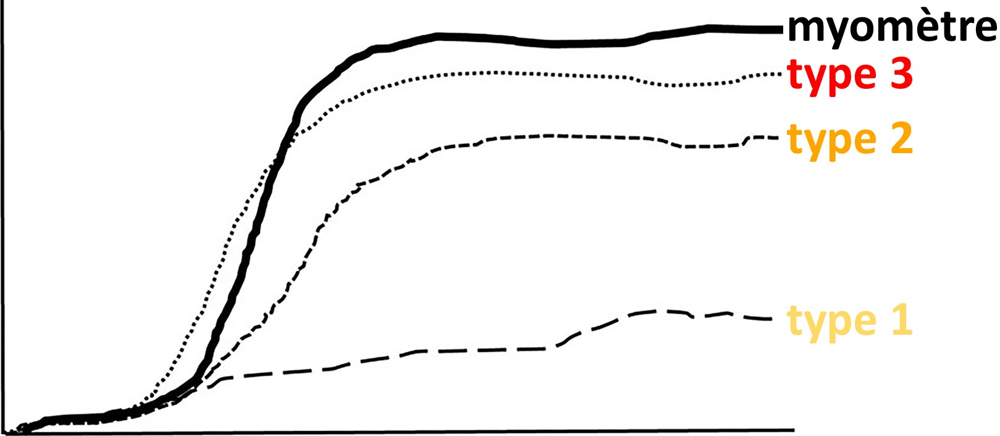

Ovaires
Examen par voie suspubienne puis endovaginale après accord de la patiente.
Utérus antéversé antéfléchi mesurant cm.
Endomètre hyperéchogène mesurant mm d'épaisseur.
Pas d'anomalie dans le myomètre.
Pas de lésion endocavitaire décelable.
Pas de dilatation tubaire.
Ovaire droit latéro-utérin, folliculaire,
Ovaire gauche latéro-utérin, folliculaire,
Pas d'épanchement pelvien significatif.
Pas de dilatation des cavités pyélocalicielles.
| Score | O-RADS US (IRM si > 7 cm ou ≥ score 3) |
|---|---|
| 2 | • Kyste simple* / KLH / dermoïde / endométriome < 10 cm • Kyste para-ovarien, faux kyste péritonéal, hydrosalpinx |
| 3 | • Kyste uni ou biloculaire / KLH / dermoïde / endométriome ≥ 10 cm • Kyste uniloculaire à paroi irrégulière < 3 mm • Kyste multiloculaire sans atypie < 10 cm |
| 4 | • Kyste multiloculaire sans portion solide ≥ 10 cm / cloisons très vascularisées / paroi ou cloisons irrégulières • Kyste multiloculaire avec portion solide faiblement vascularisée • Kyste uniloculaire avec 1-3 végétations • Masse solide modérément vascularisée |
| 5 | • Kyste uniloculaire ≥ 4 végétations • Portion solide très vascularisée / de contours irréguliers • Ascite (en dehors des masses ORADS 2) / implants péritonéaux |
Caractérisation
- contrôle M12 si > 5 cm (fonctionnel++), IRM si > 7 cm
- cystadénome séreux (bilatéral 20%) = contrôle à 1 an si > 3 cm post-ménopause
- pseudokyste péritonéal = déformable, post-op/IGH, ± dystrophie macroantrale
- endométriome = isoéchogène = IRM (hyperT1 > graisse, shading T2)
- kyste lutéal hémorragique = couronne hypervascularisée
- kyste dermoïde à contenu sébacé pur = rare +++
- cystadénome mucineux bénin / borderline si végétations = IRM
- grossesse = hyperreactio luteinalis (sd d'hyperstimulation ovarienne)
- goitre ovarien (hypoT2 franc), abcès tubo-ovarien, tumeur de la granulosa
- uniloculaire qq végétations < 1 cm = cystadénome séreux papillaire bénin
- uniloculaire végétations nbreuses / > 1 cm = cystadénome séreux borderline
- grossesse = endométriome décidualisé
- kyste + nodule mural vascularisé = cystadénocarcinome
- solide si > 80% de la masse = cystadénocarcinome, fibrome, kyste dermoïde
- métas = sd de Krukenberg = estomac/CCR et sein
Séquences T2 dans les trois plans centrées sur le pelvis.
Acquisitions 3D T1 Dixon, ainsi que axiales diffusion et T2 jusqu'aux reins.
Après injection de gadolinium, séries dynamiques axiales T1 FS et 3D T1 FS tardif.
Ovaire droit :
Latéro-utérin, folliculaire, mesurant mm.
Absence de lésion focale individualisable.
Ovaire gauche :
Latéro-utérin, folliculaire, mesurant mm.
Absence de lésion focale individualisable.
Utérus antéversé antéfléchi mesurant mm.
Endomètre en hypersignal T2 mesurant mm d'épaisseur.
Intégrité de la zone jonctionnelle et du myomètre.
Pas d'adénomégalie.
Pas d'épanchement pelvien significatif.
Pas de dilatation des cavités pyélo-calicielles.
graph TD
B(Implants péritonéaux ?) -->|OUI| R5(O-RADS 5)
B -->|NON| C(Contenu graisseux ?)
C -->|OUI| R2a(O-RADS 2)
C -->|NON| E(Portion tissulaire ?*)
E -->|OUI| F(<b>HypoT2 + hypoDWI ?</b>)
F -->|OUI| R2b(O-RADS 2)
F -->|NON| G(Perfusion)
G -->|Type 1| R3a(O-RADS 3)
G -->|Type 2| R4(O-RADS 4)
G -->|Type 3| R5b(O-RADS 5)
E -->|NON| H(Multiloculaire ?)
H -->|OUI| R3b(O-RADS 3)
H -->|NON| I(Uniloculaire cf. tableau)
I -->|eau/endométriome| R2c(O-RADS 2)
I -->|pus/sang/colloïde/mucine| R3c(O-RADS 3)
style R2a fill:#c4e538,stroke:#333,stroke-width:2px
style R2b fill:#c4e538,stroke:#333,stroke-width:2px
style R2c fill:#c4e538,stroke:#333,stroke-width:2px
style R3a fill:#FFD966,stroke:#333,stroke-width:2px
style R3b fill:#FFD966,stroke:#333,stroke-width:2px
style R3c fill:#FFD966,stroke:#333,stroke-width:2px
style R4 fill:#FFA500,stroke:#333,stroke-width:2px
style R5 fill:#ff0000,stroke:#333,stroke-width:2px
style R5b fill:#ff0000,stroke:#333,stroke-width:2px
*végétation, nodule, cloisons ou parois irrégulières
lésion considérée solide si composante tissulaire > 80%
végétation = tumeur épithéliale / graisse = tumeur germinale (tératome)


type 1 < 5% malignité < type 2 < 95% malignité type 3
faux positif type 3 = tératome (nodule Rokitansky), goitre, tumeur stromale sclérosante
graph TD
A[<b>Ovaires pseudo-tumoraux</b>] --> B(pathologie folliculaire)
A --> C(perturbation du stroma ovarien)
B -->|pelvis adhérentiel| D(dystrophie<br>macro-antrale)
B -->|PMA| E(sd d'hyperstim)
C -->|torsion<br>méta<br>insuff <3| F(œ massif)
C -->|atcd torsion<br>atcd chir.| G(fibromatose)
C -->|♀ ménopausée<br>bilatérale| H(hyperplasie<br>stromale)
H -->|hyperandrogénie| I(hyperthécose)| Masses non ovariennes | tissulaires | kystiques |
|---|---|---|
Utérine |
myome FIGO 7 | myome kystique |
Digestive |
GIST, adk app | mucocèle app |
Péritonéale |
TFS | kyste mésothélial, lymphangiome |
graph TD
A[<b>Nodules péritonéaux</b>] -->|atcd EPP| B(EPP pseudo-tumorale)
A -->|DIU| C(actinomycose)
A -->|Maghreb| D(tuberculose)Masse annexielle
Pas d'ascite ni de lésion péritonéale individualisable.
Pas d'adénomégalie rétropéritonéale ni pelvienne.
Pas de veine rénale rétro-aortique.
Pas de duplication urétérale.
Par ailleurs :
Restant des organes abdomino-pelviens sans particularité.
Pas de lésion secondaire pulmonaire ni d'adénomégalie médiastinale.
Cadre osseux sans lésion suspecte.
carcinose extra-pelvienne = grand omentum > coupole droite > gouttières paracoliques
FIGO (TDM TAP + laparoscopie = 75% découvert stade ≥ III)
- I = tumeur limitée aux ovaires/trompes
- II = carcinose péritonéale pelvienne
- III = carcinose péritonéale extra-pelvienne / ADP rétropé
- IV = méta à distance (pleurale, foie, gg inguinal, nodule ombilical, dig transmurale)
Critères de non résécabilité => chimio néoadjuvante
- ADP > veines rénales (au-delà du curage)
- racine du mésentère
- plus de 3 segments digestifs
- trigone vésical => IRM (T2, DWI, DCE)
- méta parenchymateuse (foie) ≠scalloping
- atteinte extra-abdo (pleurale, nodule ombilical)
- petit omentum (hile hépatique)
Variantes anatomiques pour curage lombo-aortique
- veine rénale rétro-aortique
- duplication urétérale
- artère rénale polaire